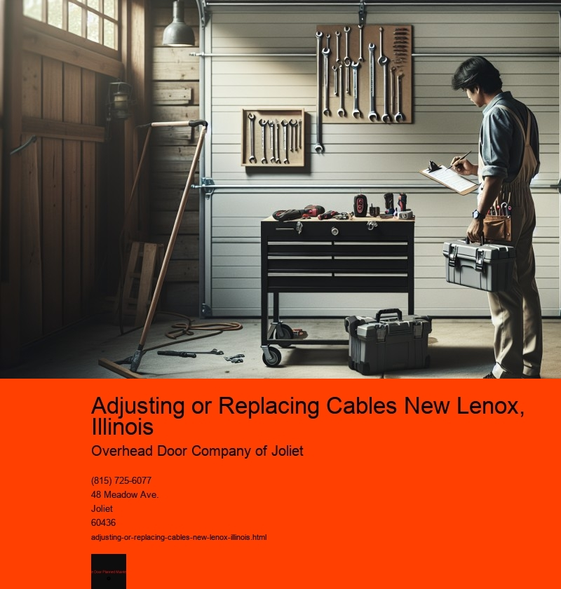

Nestled in the heart of Will County, New Lenox, Illinois, is a charming village that combines the warmth of a close-knit community with the conveniences of modern living. As with any growing community, maintaining the infrastructure that keeps our homes and businesses running smoothly is of paramount importance. One crucial aspect of this infrastructure involves the regular adjustment or replacement of cables, whether they are for electrical, telecommunications, or internet services. This essay delves into the significance of cable maintenance in New Lenox, the challenges faced, and the benefits of ensuring that this vital component of infrastructure is kept in optimal condition.
Cables are the veins through which the lifeblood of modern technology flows, connecting homes, businesses, and public spaces to the vast network of information and communication. In New Lenox, as in many other parts of the world, the demand for faster, more reliable connectivity is ever-increasing. As a result, the local infrastructure must evolve to meet these demands, necessitating the regular adjustment or replacement of cables.
One of the primary reasons for adjusting or replacing cables in New Lenox is the natural wear and tear that occurs over time. Harsh weather conditions, such as the frigid winters and hot, humid summers typical of Illinois, can contribute to the deterioration of cable materials. Additionally, the expansion and contraction of the earth due to temperature fluctuations can lead to underground cables becoming damaged or misaligned. Regular maintenance checks and proactive adjustments help mitigate these issues, ensuring uninterrupted service to the community.
Another factor prompting cable replacement is technological advancement. As innovations in telecommunications and internet technology continue to emerge, older cables may no longer support the increased data loads or speeds required by modern devices. By replacing outdated cables with newer, higher-capacity alternatives, New Lenox can ensure that its residents and businesses have access to cutting-edge technology, enhancing their quality of life and economic competitiveness.
However, the process of adjusting or replacing cables is not without its challenges. Coordinating such efforts requires careful planning and collaboration among utility companies, local government, and the community. Disruptions to daily life, such as temporary road closures or service outages, are often inevitable during these projects. Effective communication and scheduling can help minimize these inconveniences, ensuring that residents are informed and prepared for any disruptions.
Moreover, the financial aspect of cable maintenance cannot be overlooked. The cost of replacing or adjusting cables can be significant, and finding the funds to support these projects can be a challenge for local governments and utility companies. However, investing in cable infrastructure is a long-term investment in the communitys future, fostering economic growth and improving residents quality of life.
The benefits of maintaining a robust cable infrastructure in New Lenox are manifold. Reliable connectivity is essential for attracting new businesses and retaining existing ones, as it enables companies to operate efficiently and remain competitive in a digital world. For residents, high-quality cable services provide access to educational resources, telecommuting opportunities, and entertainment options, enhancing their overall quality of life.
In conclusion, the regular adjustment or replacement of cables is a critical component of maintaining the infrastructure that supports modern life in New Lenox, Illinois. While the challenges of coordinating such efforts can be significant, the benefits of ensuring reliable and up-to-date connectivity far outweigh the costs. By prioritizing cable maintenance, New Lenox can continue to thrive as a vibrant, connected community that meets the needs of its residents and businesses in an ever-evolving world.
